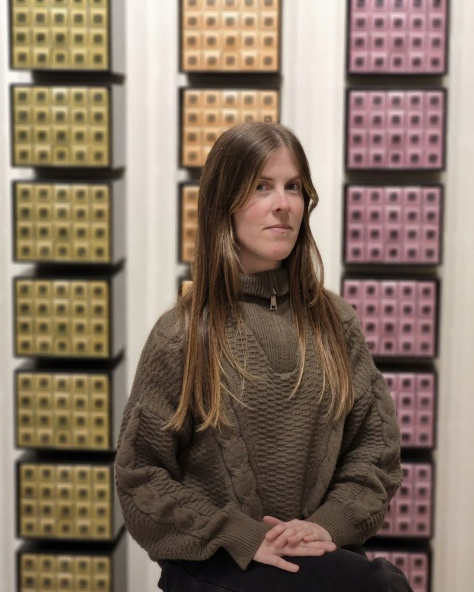

El puente entre el negocio y el código
Operations Manager eCommerce. Punto de contacto principal entre negocio y equipo de desarrollo para definir e implementar funcionalidades en la tienda online.
Montevideo, Uruguay · disponible para nuevos proyectos
Operations Manager eCommerce · Marketing Digital
Más de 8 años gestionando canales digitales de punta a punta — de la estrategia comercial al detalle técnico.

Sobre mí
Con más de ocho años de experiencia como Manager eCommerce, aporto un enfoque estratégico y operativo al desarrollo y gestión integral del canal digital.
Mi misión es garantizar una experiencia de compra fluida y efectiva, alineando las mejoras técnicas con los objetivos comerciales. Trabajo de forma directa con equipos de desarrollo para implementar funcionalidades que impactan en la experiencia de usuario y en la conversión.
Casos
Operations Manager eCommerce. Punto de contacto principal entre negocio y equipo de desarrollo para definir e implementar funcionalidades en la tienda online.
Tres años y tres roles: de Analista comercial B2B a Analista Sr. de Marketing Digital, coordinando campañas para Tienda Inglesa, Tienda Volar, El País y los negocios B2B.
Líder de Proyecto eCommerce. Condujo la creación del primer eCommerce de Paraguay, desde la planificación hasta el lanzamiento y la optimización posterior.
Marcas con las que trabajé
Recomendaciones
Recibidas en LinkedIn, octubre 2023
Lideró campañas excelentes, caracterizadas por planificaciones integrales, piezas gráficas atractivas y muy buenos resultados.
Gabriela es una excelente profesional, responsable y dedicada a su trabajo.
Contacto
Escribime y te respondo con disponibilidad y una propuesta de próximos pasos.
Escribir un mail